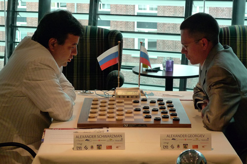
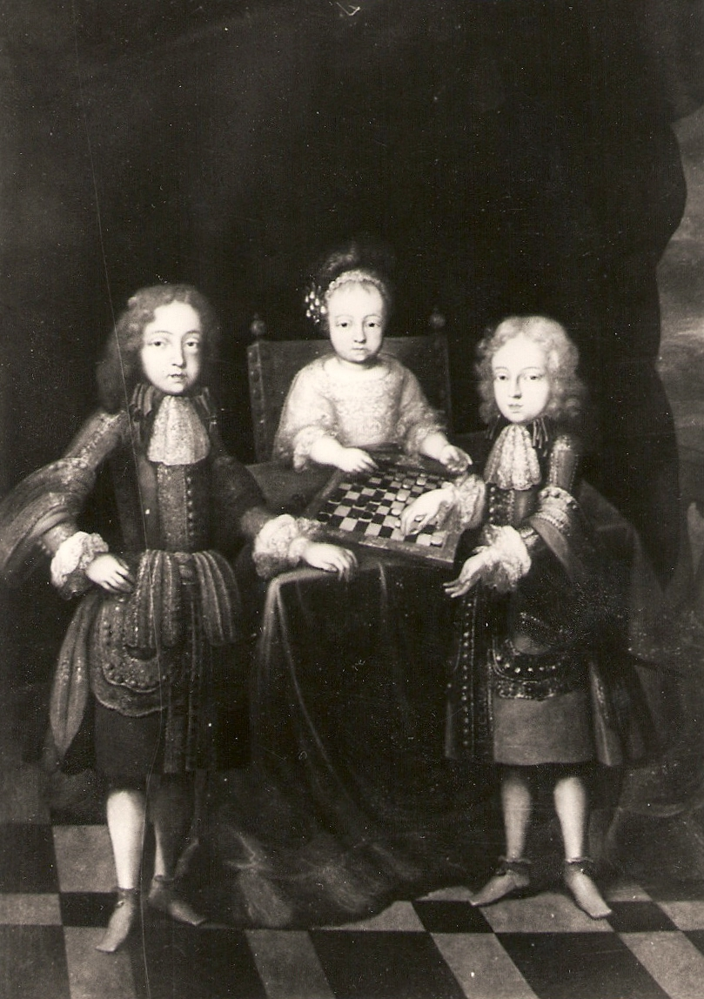
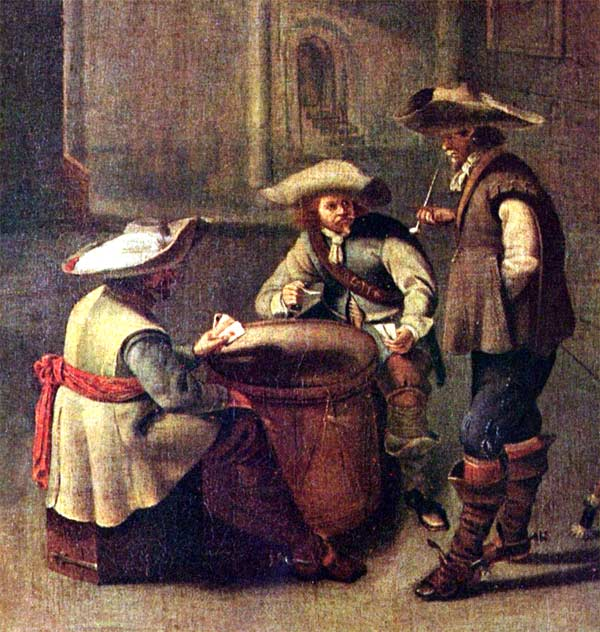
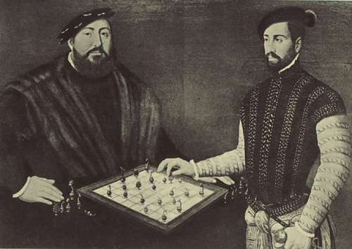
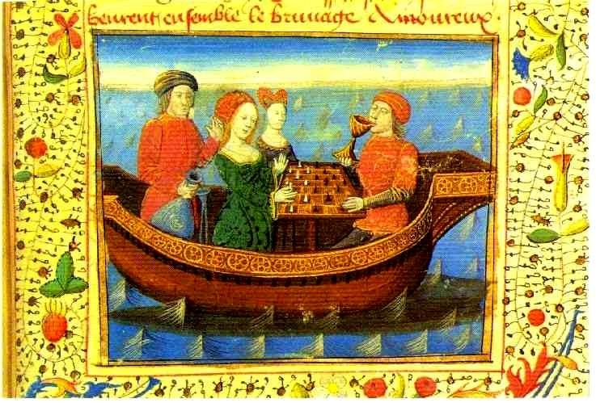
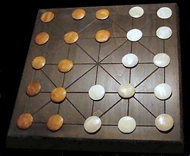
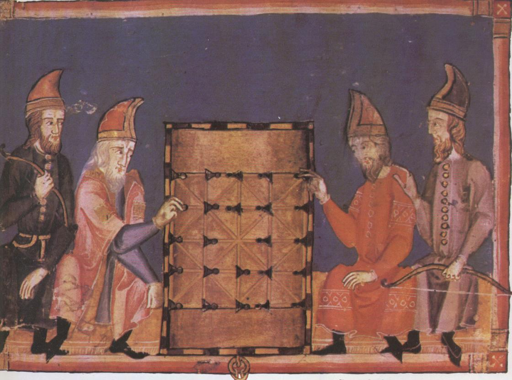
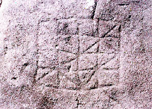

L'histoire du Jeu de Dames
Arie van der Stoep.
Actuel champion du monde Alexandre Schwarzman (à gauche) en 2009 contre son challenger Alexander Georgiev jouent sur un damier de 100 cases. Quelle est son origine?
Le damier de 100 cases pourrait être une invention hollandaise. Du 14me siècle jusqu’au milieu du 16me, les Hollandais jouaient sur un damier de 64 cases. Entre 1550 et 1600, un damiste eut l'idée d'étendre la surface du damier. Le nouveau fut bien accueilli, car bien que les règles demeurassent inchangées le jeu était devenu plus palpitant, il invitait plus facilement aux fautes.
Au 16me siècle et pendant la première moitié du 17me, les Hollandais jouaient avec 2x15 pions. Entre 1650 et 1700, le nombre de pions passa à 2x20. Le jeu à 2x20 recevait le nom de jeu de dames à la polonaise. A vrai dire ce nom était injurieux, parce qu'en Hollande l'adjectif polonais était donné à toutes les choses qu'on regardait comme immorales. Si l’on était accusé d'une infraction ou d’un délit, le bourreau installait le prévenu sur un cheval polonais afin de le torturer. Même un innocent comme un bébé avouait tous les crimes commis dans la ville. D'une pauvre jeune fille enceinte qui était abandonnée par son amant, on disait qu'elle devait lâcher un pet polonais. Une pétaudière était appelée une réunion polonaise. Tous les damistes n’accueillirent pas le jeu à 2x20 avec chaleur, ils le trouvaient étrange, bizarre.
Le passage de 64 cases à 100 cases a, par contre, été un grand succès: en 1617, un savant de la Hollande du Nord a signalé partout des damistes jouant sur 100 cases et à 2x15 pions. Le jeu de dames à la polonaise trouva sa voie à l'étranger. En France par exemple.aux environs de 1690, trois princes français jouaient aux dames dans palais de Versailles construit par leur grand-père Louis XIV lequel tenait le sceptre royal. Le jeune garçon à droite devait « aller loin », et devenir roi sous le nom de Philippe V d’Espagne.


La cour française jouait aux dames. A Versailles, les échecs étaient un jeu inconnu et au 17me siècle, il était encore peu répandu. Rare était une scène, représentant deux personnes devant un échiquier. En ce temps, le jeu de dames était beaucoup plus connu. En Hollande, le jeu d'échecs était un jeu presque ignoré. Les Néerlandais ne firent connaissance avec ce jeu qu’entre 1750 et 1800. Au 19me siècle, le jeu d'échecs faisait fureur dans toute l'Europe, surtout dans les « bons milieux » Les joueurs d'échecs commencèrent à regarder le jeu de dames de haut, le considérant comme trop simple, tout juste digne d’intéresser les ânes. Ce préjugé n'a pas complètement disparu et notre société considère toujours le jeu d'échecs comme le jeu intellectuel par excellence. Avant 1850, il n'en était rien. Au contraire, le jeu de dames jouissait d'une grande notoriété.
Aussi ne devons-nous pas être surpris de voir des petits princes le pratiquer. Les dames étaient un jeu pour les gens ayant des loisirs et pour ceux dotés d’une domesticité telle cochers, servantes, cuisinières, jardiniers, etc. Cette main d’œuvre ne jouait pas aux dames. Même constatation dans l'armée: les officiers jouaient aux dames, les soldats eux jetaient les dés ou jouaient aux cartes.
Retour dans le temps
En 1550, les Français utilisaient, comme partout en Europe, le damier de 64 cases Il en était vraisemblablement de même en Asie et en Afrique. Pour l’Amérique? Nous ne savons pas grand-chose, sinon rien.
Un Allemand (à gauche) attaque, sur un damier, un Flamand ou un Français. Un damier? Pardon, un échiquier, alors? Pas du tout, la position est une position de jeu de dames. L'électeur Johann Friedrich de Saxe, arrêté par l'empereur Charles V et emprisonné à Bruxelles, jouait aux dames contre son geôlier. A nouveau, le jeu de dames est devenu un loisir de souverains. Le tableau a été peint par le Néerlandais Anthonis Moro.
Jouer aux dames sur un damier de 64 cases cela se faisait depuis le 14me siècle, dés 1350. Prendre n'était pas alors obligatoire. Cette règle a était introduite seulement un siècle plus tard, quelque part en Europe, mais nous ne savons pas dans quel pays. La variante libre, donc sans obligation de prendre, a survécu jusqu'au 17me siècle. Johann Friedrich a donc pu jouer au jeu libre et au jeu moins libre.

Ce couple sur la miniature française (1470) avait un pareil choix: libre ou moins libre? La jeune femme est une princesse d'Irlande, son adversaire un chevalier haut placé qui avait la mission de l’accompagner auprès du roi auquel elle a été promise par son père. Une fois de plus, ils se servent de pièces d'échecs, mais la position est celle du jeu de dames.
Quelle est l’origine du jeu de dames à 64 cases? Nous ne le savons pas. Dans un pays européen quelconque, on a utilisé un échiquier comme damier. En cette occasion, le "nouveau" jeu a reçu le nom de jeu de dames, nom donné par la France.
Le jeu de dames dans cette nouvelle configuration était extrêmement populaire. On lit dans toutes sortes de livres et sur beaucoup de sites que le jeu d'échecs était le jeu populaire par excellence, mais ceci est douteux, même si cela demeure plausible. Des recherches historiques orientées vers la popularité des jeux de dames et d'échecs en Espagne, en France et en Angleterre, au Moyen Age, apportent une conclusion évidente: le jeu de dames était alors beaucoup plus cher et important que le jeu d'echecs.
Dans nos livres et sur nos sites nous pouvons lire des informations erronées sur les jeux de damier. Le jeu de dames au damier ligné porte le nom d’alquerque. Alquerque était un jeu sans promotion, donc sans dames, avec seulement des pions, on peut lire cela partout. Toutes ces sources se répètent à l’envi et ce sans la moindre étude.

Retour plus lointain dans le temps
Nous voyons deux Espagnols jouant au dames en 1283, sur le damier »ligné». Durant combien de temps a-t-on utilisé ce type de damier? Nous l’ignorons. Probablement depuis l’an 500 après Jésus-Christ, ou peut-être encore plus tôt, puisque nous trouvons un tel damier gravé sur un bloc de pierre dont l’âge pourrait être antérieur. Pour les archéologues, il est cependant toujours difficile de déterminer l'âge exact d'une telle gravure. Pour cette raison nous devons écrire ce qui suit avec grande prudence. Très vraisemblablement le jeu de dames était connu aux environs de l’an 500. Est-il plus vieux? Si oui, de combien de siècles?
Ici aussi nous ne savons pas. Nous ne connaissons pas non plus la région où il est né. S’agissait-il d’une région sous influence romaine ou bien arabe?